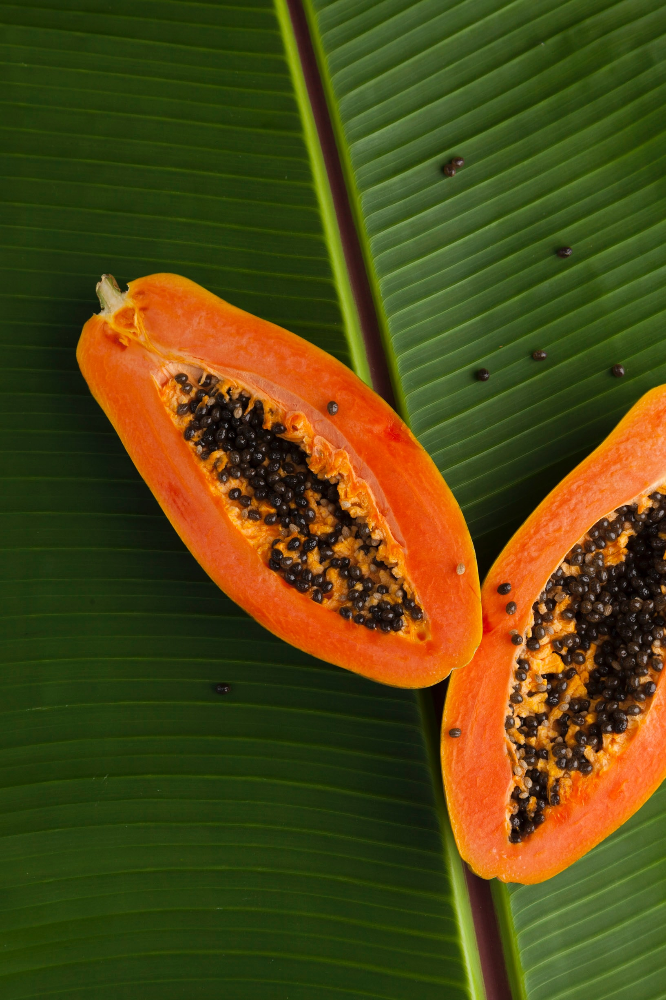

About Papayas
Papayas are tropical fruits with a sweet and exotic flavor. They are rich in vitamins, particularly vitamin C, and are enjoyed fresh, in fruit salads, smoothies, and various dishes. Papayas are known for their orange flesh and black seeds.
Steps to Grow Papayas
- Choose a sunny and sheltered location with well-drained soil for papaya cultivation.
- Plant papaya seeds or seedlings in the spring or early summer, ensuring proper spacing between plants.
- Water the plants regularly, keeping the soil consistently moist but not waterlogged.
- Fertilize papaya plants with a balanced fertilizer to support growth and fruit production.
- Protect the plants from pests and diseases through regular monitoring and treatment.
- Harvest papayas when the fruits are fully ripe and have a yellow or orange color, typically in late summer or fall.
Extra Information
Papayas are not only delicious but also nutritious. They are a great source of enzymes like papain, which aids digestion. Papayas are popular in tropical regions and are a symbol of the tropics. They are often used in fruit salads and salsas.